Fichas de lectura
Texto informativo en español con huecos y banco de palabras, comprensión auditiva con código QR (audio gratuito) y sopa de letras: 5 páginas con solucionario.
2.184 recursos
Materia
Grado
Las aventuras de Tintín – Ficha de lectura: texto con huecos, comprensión auditiva y sopa de letras
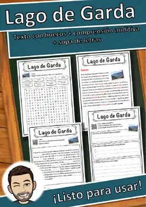
Lago de Garda – Ficha de lectura: texto con huecos, comprensión auditiva y sopa de letras

Juez – Ficha de lectura: texto con huecos, comprensión auditiva y sopa de letras
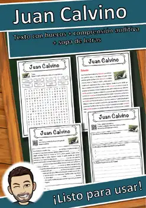
Juan Calvino – Ficha de lectura: texto con huecos, comprensión auditiva y sopa de letras

Johanna Spyri – Ficha de lectura: texto con huecos, comprensión auditiva y sopa de letras

Job – Ficha de lectura: texto con huecos, comprensión auditiva y sopa de letras
Jesse James – Ficha de lectura: texto con huecos, comprensión auditiva y sopa de letras
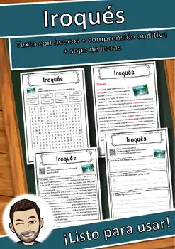
Iroqués – Ficha de lectura: texto con huecos, comprensión auditiva y sopa de letras
Ironía – Ficha de lectura: texto con huecos, comprensión auditiva y sopa de letras

Integración – Ficha de lectura: texto con huecos, comprensión auditiva y sopa de letras
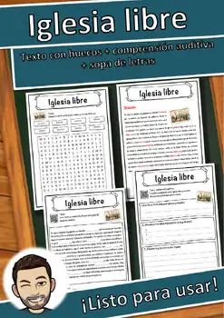
Iglesia libre – Ficha de lectura: texto con huecos, comprensión auditiva y sopa de letras
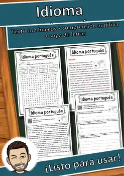
Idioma portugués – Ficha de lectura: texto con huecos, comprensión auditiva y sopa de letras
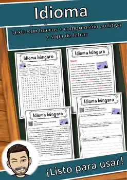
Idioma húngaro – Ficha de lectura: texto con huecos, comprensión auditiva y sopa de letras
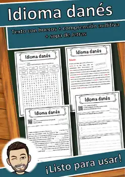
Idioma danés – Ficha de lectura: texto con huecos, comprensión auditiva y sopa de letras
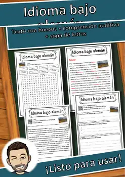
Idioma bajo alemán – Ficha de lectura: texto con huecos, comprensión auditiva y sopa de letras
Idioma alemán – Ficha de lectura: texto con huecos, comprensión auditiva y sopa de letras
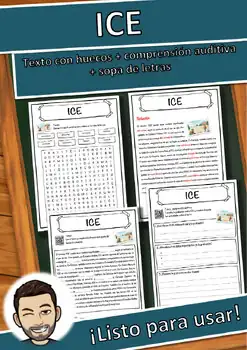
ICE – Ficha de lectura: texto con huecos, comprensión auditiva y sopa de letras
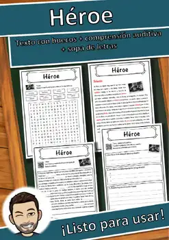
Héroe – Ficha de lectura: texto con huecos, comprensión auditiva y sopa de letras
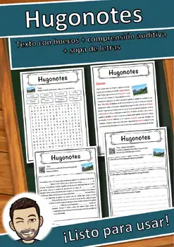
Hugonotes – Ficha de lectura: texto con huecos, comprensión auditiva y sopa de letras

Historiador – Ficha de lectura: texto con huecos, comprensión auditiva y sopa de letras

Historia moderna – Ficha de lectura: texto con huecos, comprensión auditiva y sopa de letras
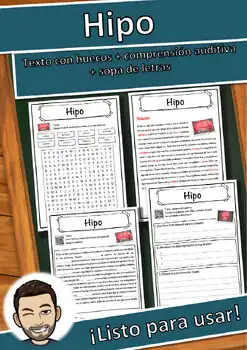
Hipo – Ficha de lectura: texto con huecos, comprensión auditiva y sopa de letras

Hermes – Ficha de lectura: texto con huecos, comprensión auditiva y sopa de letras
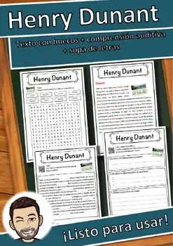
Henry Dunant – Ficha de lectura: texto con huecos, comprensión auditiva y sopa de letras

Hefesto – Ficha de lectura: texto con huecos, comprensión auditiva y sopa de letras
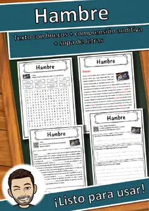
Hambre – Ficha de lectura: texto con huecos, comprensión auditiva y sopa de letras
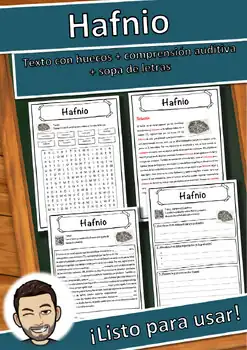
Hafnio – Ficha de lectura: texto con huecos, comprensión auditiva y sopa de letras
Hada – Ficha de lectura: texto con huecos, comprensión auditiva y sopa de letras
Género fantástico – Ficha de lectura: texto con huecos, comprensión auditiva y sopa de letras
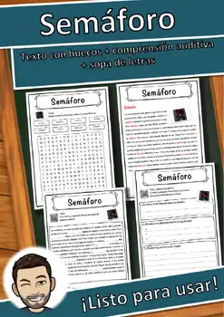
Semáforo – Ficha de lectura: texto con huecos, comprensión auditiva y sopa de letras
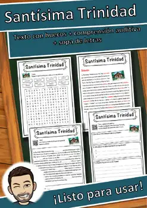
Santísima Trinidad – Ficha de lectura: texto con huecos, comprensión auditiva y sopa de letras

Santa Sofía – Ficha de lectura: texto con huecos, comprensión auditiva y sopa de letras
Sambucus – Ficha de lectura: texto con huecos, comprensión auditiva y sopa de letras
Salmon – Ficha de lectura: texto con huecos, comprensión auditiva y sopa de letras
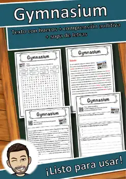
Gymnasium – Ficha de lectura: texto con huecos, comprensión auditiva y sopa de letras

Guerra ruso-ucraniana – Ficha de lectura: texto con huecos, comprensión auditiva y sopa de letras

Guerra Fría – Ficha de lectura: texto con huecos, comprensión auditiva y sopa de letras
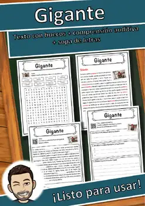
Gigante – Ficha de lectura: texto con huecos, comprensión auditiva y sopa de letras

Fábula – Ficha de lectura: texto con huecos, comprensión auditiva y sopa de letras
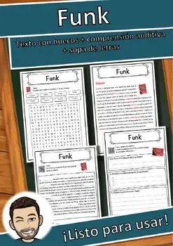
Funk – Ficha de lectura: texto con huecos, comprensión auditiva y sopa de letras
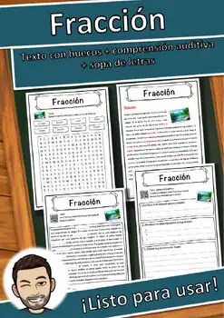
Fracción – Ficha de lectura: texto con huecos, comprensión auditiva y sopa de letras

Foro Económico Mundial – Ficha de lectura: texto con huecos, comprensión auditiva y sopa de letras
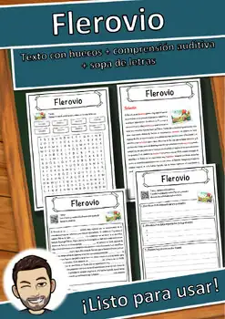
Flerovio – Ficha de lectura: texto con huecos, comprensión auditiva y sopa de letras
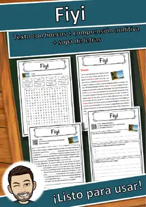
Fiyi – Ficha de lectura: texto con huecos, comprensión auditiva y sopa de letras
Finlandia – Ficha de lectura: texto con huecos, comprensión auditiva y sopa de letras
Faro – Ficha de lectura: texto con huecos, comprensión auditiva y sopa de letras
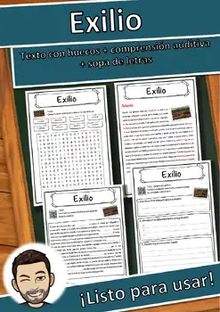
Exilio – Ficha de lectura: texto con huecos, comprensión auditiva y sopa de letras

Energía – Ficha de lectura: texto con huecos, comprensión auditiva y sopa de letras
No se encontraron recursos. Prueba con otra palabra o con otro filtro.